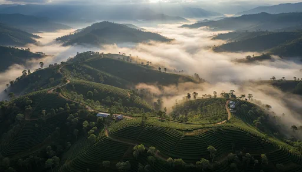
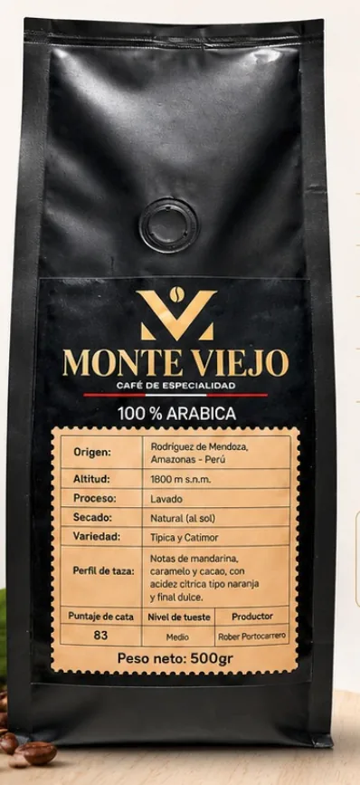
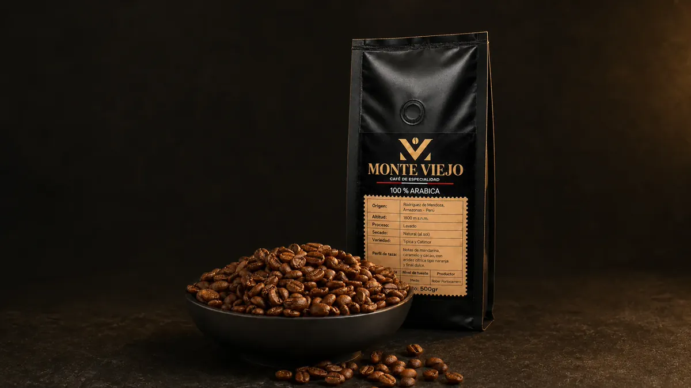
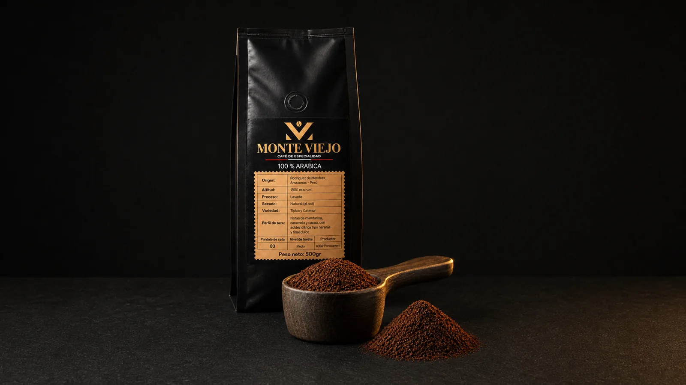
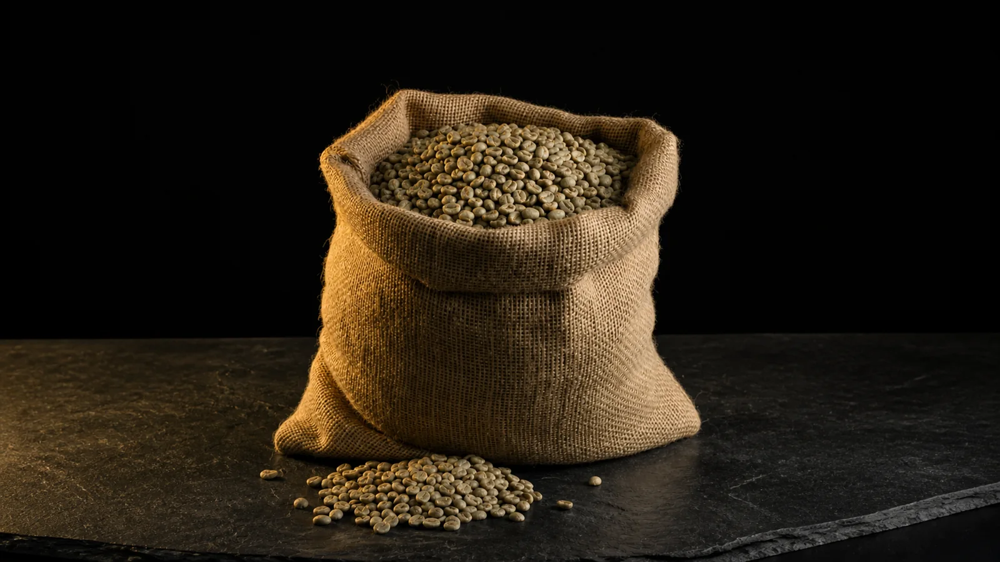
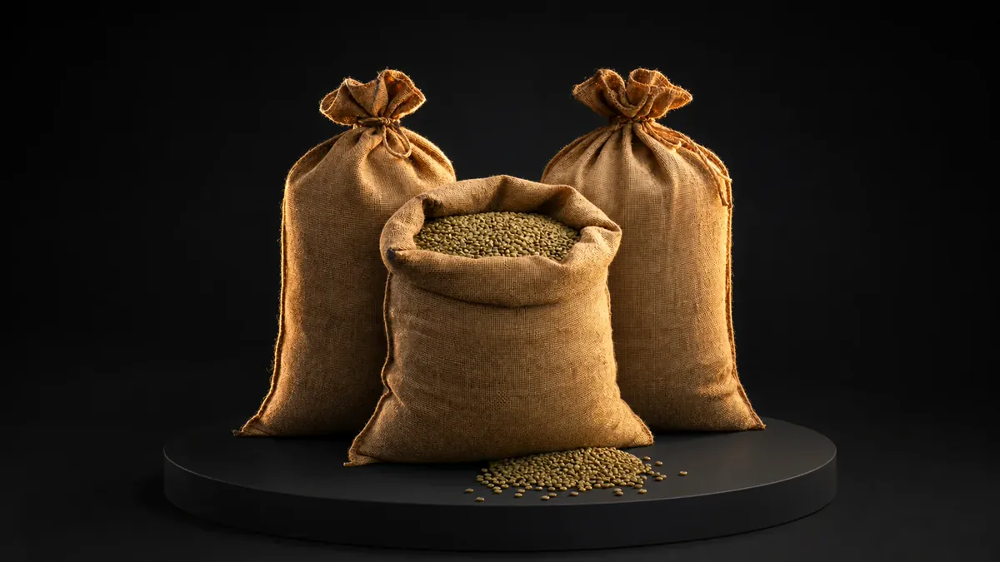

Dos generaciones trabajando con café
Somos una familia de las montañas de Rodríguez de Mendoza, Amazonas.


Vendemos café verde, tostado en grano y molido. Atendemos a tostadores, cafeterías, otros negocios y personas que preparan café en casa.

Un tueste balanceado, con dulzor natural, buen aroma y una taza limpia.

Molienda fina, media o gruesa según cómo prepares tu café.

Origen identificado y lotes consistentes para tostadores y cafeterías.

Pedidos para cafeterías, restaurantes, tiendas, tostadores y distribuidores.
Somos una familia de las montañas de Rodríguez de Mendoza, Amazonas.
Seleccionamos el grano en el campo y revisamos su calidad después del proceso.
Protegemos el suelo, el agua y la biodiversidad que hacen posible nuestro café.
Nuestro café es 100% arábica, de variedades Catimor y Típica. Usamos el proceso lavado para obtener una taza limpia, balanceada y dulce.
Cultivamos el café, usamos el proceso lavado y revisamos la calidad de cada lote antes de preparar un pedido.
Cultivamos café por encima de los 1600 m s. n. m. y cuidamos el entorno que lo hace posible.
Procesamos el café por vía lavada para obtener una taza limpia, balanceada y dulce.
Revisamos su calidad después del proceso y antes de preparar cada pedido.
Escríbenos para pedir café tostado en grano o molido. Si compras para un negocio, también atendemos café verde y pedidos por mayor.
Pedir por WhatsApp